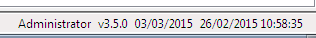
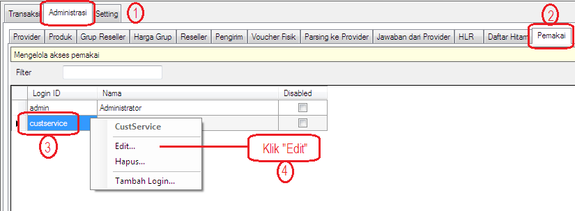
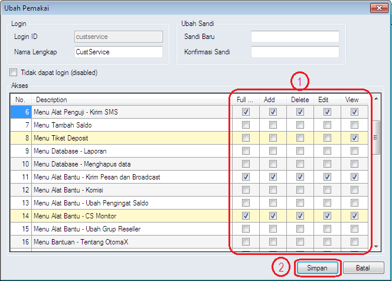

Mengubah Hak Akses
Mungkin kemarin ketika Anda membuat Login ID klik disini belum begitu mencermati masalah Hak Akses yang diberikan ke Login ID yang dibuat; dan sekarang mungkin hendak mengubahnya, menambah Hak Akses atau menguranginya. Bagaimana caranya? Simak yang satu ini.
-
Pastikan Anda masuk ke OtomaX menggunakan Login ID admin (administrator). Perhatikan tampilan OtomaX pojok kanan bawah (lihat gambar)

-
Masuk menu Administrasi -> Pemakai -> Pilih Login ID yang ingin diubah Hak Aksesnya (pada contoh kemarin Login ID=CustService) -> Klik Kanan -> Klik Edit

-
Kemudian akan dihadapkan tampilan berikut. Ubah Hak Akses pada Menu OtomaX sesuai yang dihendaki (Full Control, Add, Delete, Edit dan View), terakhir klik tombol Simpan.

- Selesai.
Catatan: Mengubah hak akses seperti di atas hanya dapat dilakukan apabila edisi OtomaX Anda minimal edisi Standard atau lebih tinggi, sehingga bila menghendaki mengubah hak akses, upgrade dahulu klik disini; dan bila belum memiliki OtomaX, beli dahulu minimal edisi Standard klik disini.